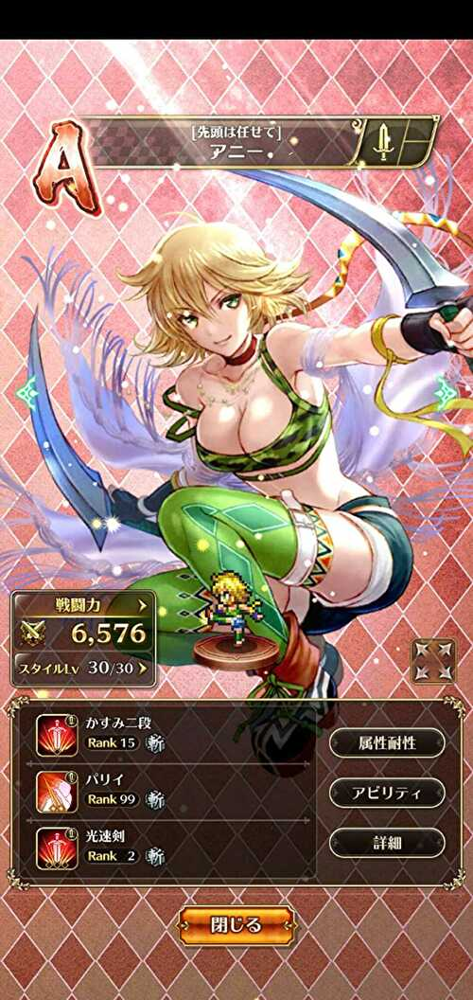
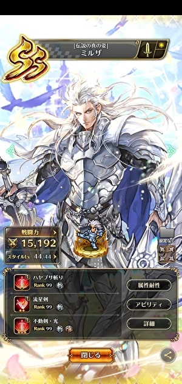

ロマサガＲＳの手動技（補助技）のランク自慢
ホーム > ロマサガＲＳ > ロマサガＲＳの手動技（補助技）のランク自慢
ロマサガRSで、手動でしか使われない技（補助技）をせっせとランク上げしていました。多くの技がランク99になったのでその自慢をしたいだけの記事です。
一部、どうやってランクを上げたのかを動画付きで解説しています。
基本的には修業者の間と、毎朝の日課（魔物たっぷりの洞窟修練、ザクザク財宝収集、深奥の密林調査）でランクを上げました。
手動技一覧はこちら
パリイ
パリイ

パリイはこんな感じで修業者の間でランク上げすると気持ちいいですよ！ 最初のターンだけ手動でパリイを選択して、２ターン目以降は右下のAll Repeatボタンを押すと早いです。
カウンター
マタドール


カモンベイビー

風車

ジョルトカウンター
クロスドリルドライバ

セルフバーニング


フリーズスパイク

ジャストミート
かすみ青眼

荒獅子
虹写し
ヘッジホグシステム
喪神無想
最近（2022年1月現在）、定期的に術・技ランクが上がりやすいイベントが開催されるので、以下の動画のようにしてカウンター技のランク上げるのもいいかもしれないですね。
術・技ランクが上がりやすいイベントの開催期間外の場合、カウンタ―技は以下のようなやり方でランクを上げました。
【方法①：秘密特訓 斬・猛（又は秘密特訓 打・激）】
おそらく一番効率がいいのは秘密特訓 打・激です。
悪鬼は殆どの攻撃が直接攻撃（地裂撃以外）なので、カウンターを発動させやすいです。
参考に、ローラの虹写しのランクを上げている動画を貼っておきます。
動画内で5回ランクアップしています。
01:11 ランクアップ1回目
01:55 ランクアップ2回目
03:25 ランクアップ3回目
03:45 ランクアップ4回目
04:56 ランクアップ5回目
【やり方の解説】
デザートランス・改でローラを先頭に置き、武器を外しています。ローラ以外のキャラは打耐性の低いキャラを武器・防具共に装備なしで配置しています。
虹写しを使えないターンは悪鬼の攻撃を回避させるために素早さの上がる陣形を採用しています。ラピッドストリームだとローラ以外のキャラも素早さが上がってしまうため、デザートランス・改にしました（ローラ以外のキャラは素早さが下がる）。
悪鬼は1ターン目はぶちかまし固定なので、ローラ以外はここで倒れてもらいます。ターンが進むにつれて敵の手数が増えるため、最初は通常攻撃でBPを貯め、4ターン目から攻撃を開始しています。場合によっては1ターンで複数回ランクが上がることがあります。
【方法②：秘密特訓 斬・猛（又は秘密特訓 打・激）】
秘密特訓 斬・猛もお勧めです。
秘密特訓 打・激よりは敵の手数は減りますが、秘密特訓 打・激と同様に敵の攻撃が殆ど物理攻撃なので、カウンターを発動させやすいです。
カウンタ―技と一緒に他のキャラの大技を上げたい場合におすすめです。
【やり方の解説】
タイガーシャークの先頭にカウンターキャラを置いて、残りの4人は静寂持ちキャラを配置。
1ターン目でランクが上がらなければ再戦を押すことで効率よくランクを上げることができます。
【方法③：修業者の間】
※アザミのジョルトカウンターは既にランク99になっているため、この動画内ではランクアップはしていません。
【やり方の解説】
鳳天舞の陣やタイガーシャークの真ん中にカウンタ―技を使用するキャラを配置。対象の技を選択した後、右下のAll Repeatを押下。直後に全力AUTOを押下。
すると対象キャラはカウンタ―技を使用。カウンタ―技は敵の直接攻撃が来るたびにランクが上がる可能性があるため、運が良ければ１ターンで２回以上ランクが上がることもある。
対象キャラ以外は、１ターン目は通常攻撃。２ターン目はBP13以上の技を使用するため、大技のランク上げも兼ねることができる。
※セルフバーニングは術なので、ランクが上がるのは戦闘終了時の１回のみ。また、フリーズスパイクは技使用時のみランクが上がるので１ターンでランクアップする回数は１回のみ
バフ／デバフ
ハードファイア

ヒロイズム


クリウィルは未所持なので対象外
妖精光
水舞い

エアスクリーン

ダンシングリーフ
気合い

フラメンコに誘われて

武装弦楽祭
勝利の詩

静謐の詩
息吹
呼水
水祭
獅子の構え・纏
オンザビーチ
百華
ベルセルク
守勢の舞、愛の歌
ネコダンス
ディレイオーダー
ディレイオーダーは以下の動画のような感じでランクを上げました。
メイン1部2章 12-1-3で気絶周回しながら時の君のディレイオーダーのランク上げをしています。
カラフルレンジャーの素早さ枠に時の君、知力枠にアルベルト（パワベルト）を置き、ディレイオーダー⇒王者の剣の順に行動させることで、ディレイオーダーのランクを上げながら気絶周回しています。
手順としては↓こんな感じです。
・1ラウンド目
通常攻撃⇒通常攻撃⇒ディレイオーダー⇒王者の剣⇒通常攻撃
・2, 3ラウンド目
All Repeat
このやり方であれば、私の場合、1時間で15～20ぐらいランクを上げることができました。ご参考にどうぞ。
ハッピースーベニア
ピュアバリア
マジックゲイン
スポイルウェイヴ
プレゼントプレジャー
BP回復
二刀の構え

グスタフは未所持なので対象外
二刀の構えや獅子の構え・纏、勝利の詩のように消費BPが少ない技は、最初に技を選択してその後、下記動画のようにAll Repeatを押し続けることで技ランクを上げることが可能。
最近（2022年1月現在）、定期的に技ランクが上がりやすいイベントが開催されるので、そこで以下の動画のようにAll Repeatを駆使してランクを上げるのもいいかもしれないですね。
状態異常付与
足がらめ


ナップ


風と樹のうた
ホラー

睡魔剣
ミステリータップ
状態異常回復
やさしいうた


浄化の水
自己回復
町長の舞
ゴールデンシロップ
活心
マギオーラ
しゅうふく

集気法
祝福の矢
ディレイ
不動剣

不動剣・光
焔返し
ツイストスキュア
冷凍剣
氷河の太刀
影の太刀

大地爆砕
羅刹掌
ライズスタッブ
刻み巡り
スターストライク
その他
強化キャンセラー
アイスリボルブ
ウィンドリボルブ